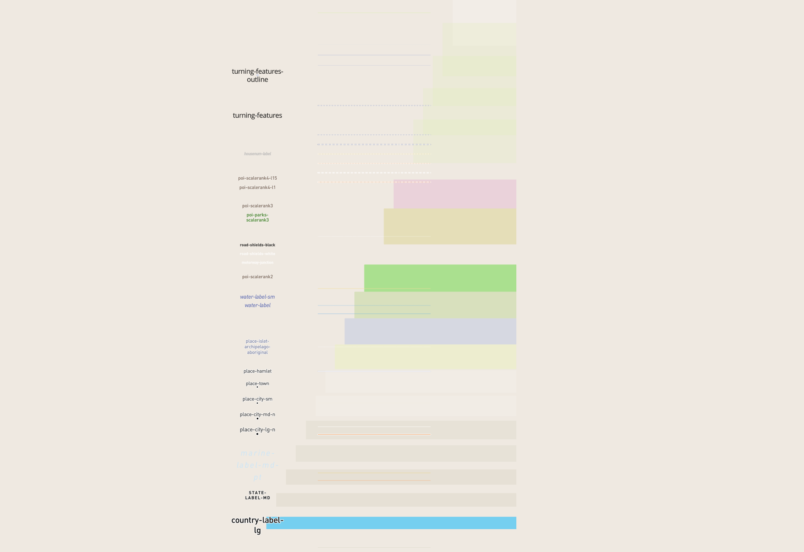
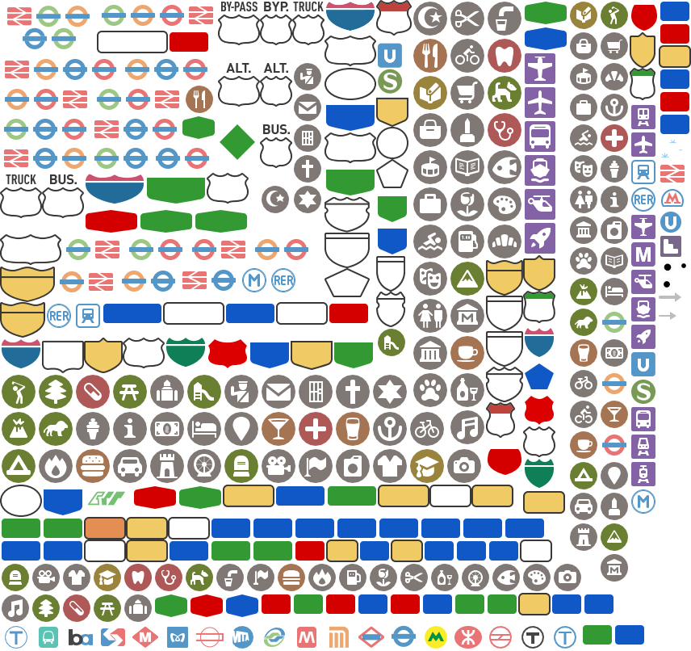
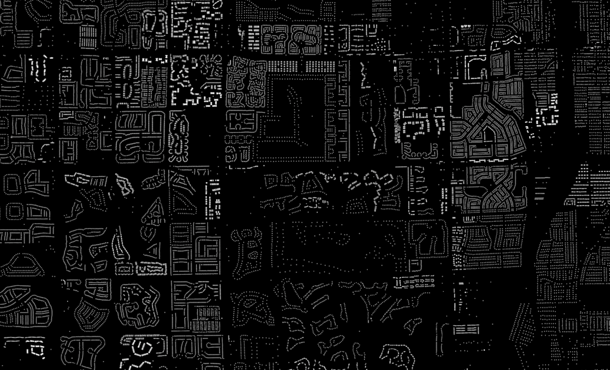
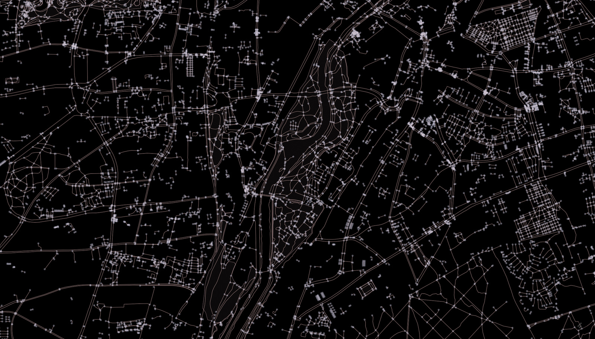
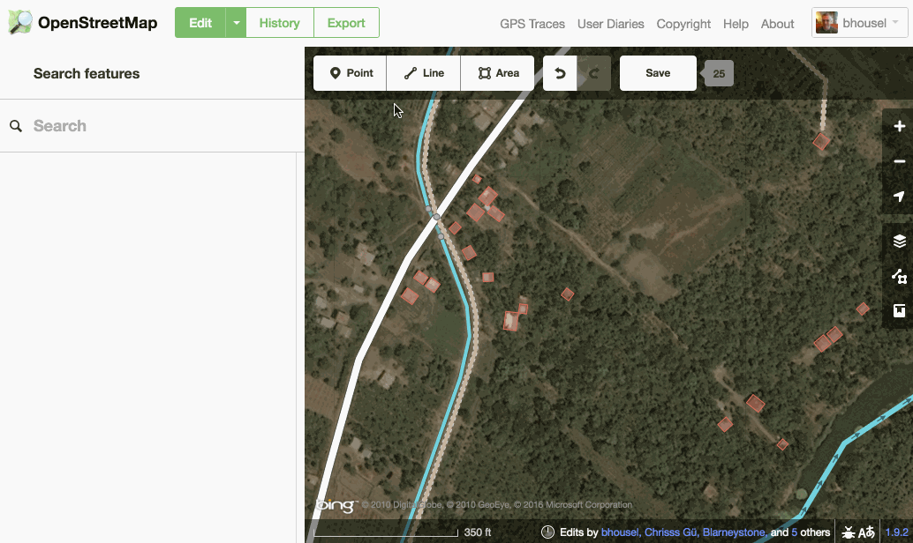
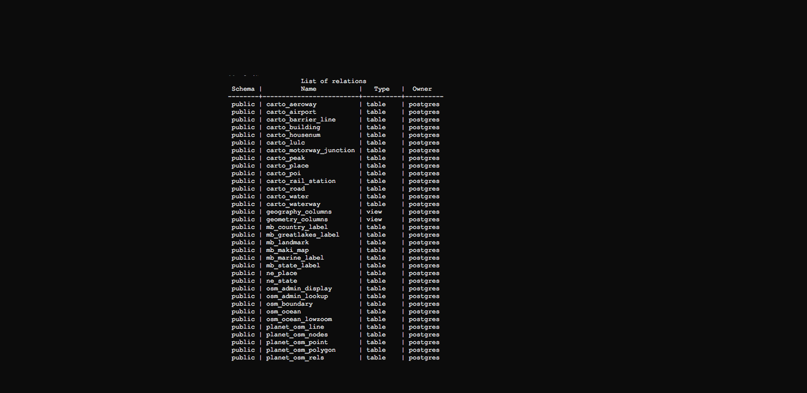

Mapbox wants to change the way people navigate cities and understand
our planet.
Mapbox does this by providing building blocks for integrating brand and location into any mobile or online app.
Turf.js advanced geospatial analysis for browsers and node.
Beautiful Basemaps mixing performance, science, and design with our smooth, fast vector maps that render data in real-time.






- Style background.
- Add and style water layer. (polygons)
- Add and style road layer. (lines)
- Filter road layers.
- Add and style place labels. (points)
- Filter place labels.